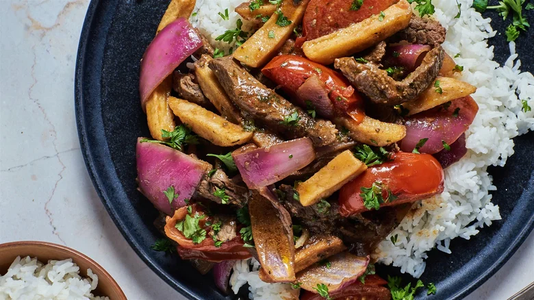

Peruvian Lomo Saltado

Description
This lomo saltado recipe is a traditional and very easy dish to make. I might add that it's also very popular with finicky kids and adults.
Ingredients
- Frozen French Fries
- Beef strips
- Tomatoes
- Soy Sauce
- Rice
Steps
- Cook the french fries in a pan or an oven. Peruvians make them in the pan.
- Season the beef and cook it.
- Add the sliced tomatoes and some soy sauce. Cook until it's tender.
- I hope by now that you cooked the rice as well.
- Serve a side of rice (cooked) and the beef+tomatoes stir mixed with some french fries. You have to mix the fries with the beef for a true peruvian presentation.
- Add some parsley on top, if you have parsley.
You can eat this with an Inca Kola or a cold beer. Maybe even with a Pisco Sour.